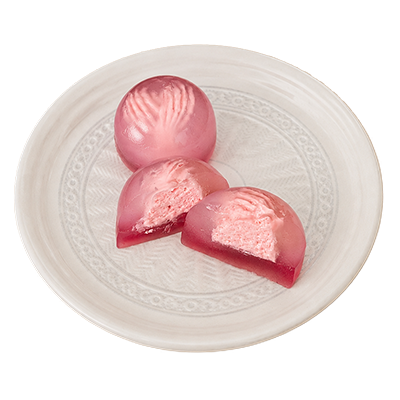
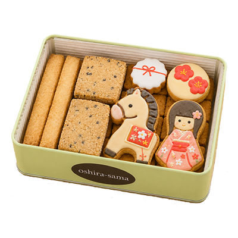
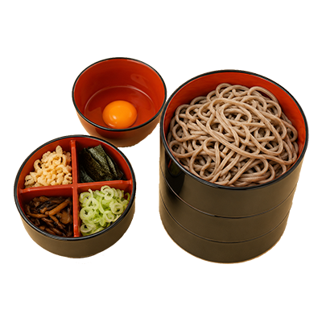
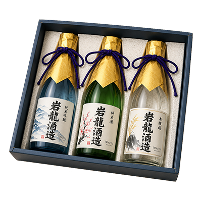
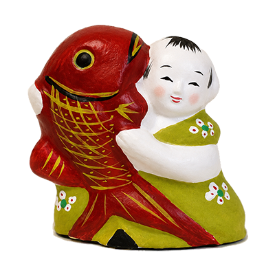
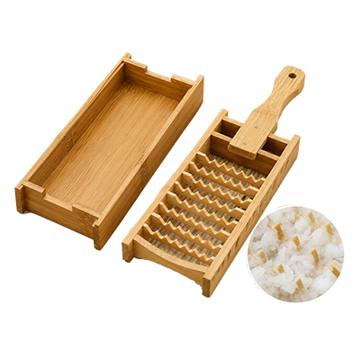

レアチーズ入り水まんじゅう
カッパの水まんじゅう。
中心にレアチーズが入っていて和菓子なのに洋風の味わいもある逸品。
全国各地にカッパ伝説はあれど、遠野ならではの特徴として緑色の体色ではなく、赤いのだそう。
それにちなんでほんのりピンク色をしています。
 -eat-
-eat-

カッパの水まんじゅう。
中心にレアチーズが入っていて和菓子なのに洋風の味わいもある逸品。
全国各地にカッパ伝説はあれど、遠野ならではの特徴として緑色の体色ではなく、赤いのだそう。
それにちなんでほんのりピンク色をしています。

オシラサマのめおとクッキーセット。
ほんのりジンジャーが効いていて、異種族恋愛を貫いた、アツい絆のホットな恋人同士にぴったりのお菓子です。

岩手といえば、わんこそば。
しかし遠野を訪れたら、ぜひひつこそばは食べてみたい！三段弁当箱の器の一段に薬味を入れたものが一人前。
わんこそば同様、何杯食べられるか挑戦してみるのもいい。

遠野特有の気候と風土の中で生まれた良質な米と、北上山地に洗われた清冽な水。遠野の地酒は、辛党であれば見逃せない。
岩龍酒造の酒は、苦・渋・甘・酸・辛が一体となってうま味を醸し出しています。各銘柄、呑み比べてみてください。
-shop-

附馬牛（つきもうし）人形は、遠野郷に古くから伝わる土人形。
種類は豊富で、内裏雛（だいりびな）や七福神、山の神やイヌ、ネコの動物など。
彩色は山ブドウからとった紫、野イチゴからとった赤で仕上げられる。
素朴でおめでたい逸品だ。

朴の木で作った台に竹を植え込んだ調理器具。
これで大根をおろすと酸化が少なく、時間が経っても変色しづらい。
やや粗めのおろしとなり、素材本来の味そのままに歯ごたえのある一味違った仕上がりになる。